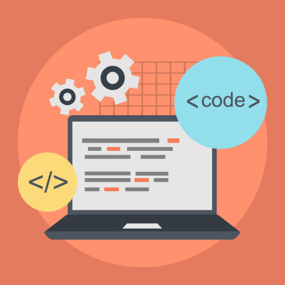

Alumno
- Nombre: Alex
- Apellidos: Chica Vaquerizo
- Curso: AMS1
Módulos realizados
M03: Programación

M05: Entornos de desarrollo
Tareas realizadas
- Creación del core del programa.
- Creación del repositorio de GitHub.
- Compartir datos y archivos a través de GitHub.
- Búsqueda sobre cómo conectar Pycharm con MySQL.
- Creación de la mayoría de las funciones del programa.
Alumno
- Nombre: Joel
- Apellidos: Berzal Álamo
- Curso: AMS1
Módulos realizados
M03: Programación
M04: Lenguajes de marcas
M05: Entornos de desarrollo
Tareas realizadas
- Creación del diagrama de flujo.
- Creación de funciones para el programa.
- Compartir datos y archivos a través de GitHub.
- Creación de los archivos html que conforman la página web del proyecto.
- Creación de los textos que se encuentran en la parte superior del programa.
Alumno
- Nombre: Patricio
- Apellidos: Rojas Condori
- Curso: AMS1
Módulos realizados
M01: Sistemas Operativos
M02: Bases de Datos
M03: Programación
M05: Entornos de desarrollo
Tareas realizadas
- Creación de la base de datos.
- Creación de una cuenta en Azure.
- Creación de una Máquina Virtual.
- Creación de funciones para el programa.
- Compartir datos y archivos a través de GitHub.